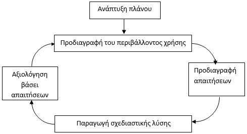

Ευχρηστία ενός συστήματος είναι η ικανότητά του να λειτουργεί αποτελεσματικά και αποδοτικά ενώ παρέχει υποκειμενική ικανοποίηση στους χρήστες του.
Η ευχρηστία ενός συστήματος αναλύεται στις εξής παραμέτρους:
Τα νοητικά μοντέλα που αφορούν τη χρήση συσκευών διακρίνονται σε δύο κατηγορίες:
Ιδεατά μοντέλα είναι ένας γενικός όρος που περιγράφει όλα τα νοητικά μοντέλα που εμπλέκονται κατά τις φάσεις σχεδίασης, ανάπτυξης και λειτουργίας ενός υπολογιστικού συστήματος, δηλαδή τους διαφορετικούς τρόπους με τους οποίους το σύστημα γίνεται αντιληπτό από τους σχεδιαστές και τους χρήστες του.
Τα μοντέλα σχεδιαστή είναι τα νοητικά μοντέλα που οι σχεδιαστές αναπτύσσουν για το σύστημα και την αλληλεπίδραση του μελλοντικού χρήστη μ’ αυτό (δομικά και λειτουργικά μοντέλα), ενώ τα μοντέλα χρήστη είναι τα μοντέλα που αναπτύσσει τελικά ο χρήστης κατά την εκμάθηση και χρήση του συστήματος (λειτουργικά μοντέλα). Η συνήθης διαδικασία με την οποία οι χρήστες ανακαλύπτουν και μαθαίνουν το νοητικό μοντέλο του συστήματος είναι η ανάγνωση των εγχειριδίων, η αλληλεπίδραση με το σύστημα (διερευνητική εκμάθηση) και γενικά η εμπειρία χρήσης του συστήματος. Αυτά συνιστούν την εικόνα του συστήματος, που αποτελεί το μέσο με το οποίο το μοντέλο σχεδιαστή μεταβιβάζεται στον χρήστη.
Οι διαφορετικοί τρόποι με τους οποίους ο χρήστης μπορεί να αλληλεπιδράσει με τον υπολογιστή είναι γνωστοί ως στυλ αλληλεπίδρασης και είναι οι εξής:
Τα πλεονεκτήματα είναι η δυνατότητα που παρέχει σε έμπειρους χρήστες να εκτελούν σύνθετες λειτουργίες με γρήγορο και αποτελεσματικό τρόπο και απόλυτη πρωτοβουλία ενεργειών.
Μειονέκτημά της είναι ότι δεν είναι κατάλληλη για άπειρους ή ευκαιριακούς χρήστες, απαιτεί συνήθως μακροχρόνια εκπαίδευση και ικανότητα ενθύμησης των εντολών και σε περιπτώσεις σφαλμάτων δεν είναι κατατοπιστική.
Τα πλεονεκτήματα είναι ο μικρός αριθμός πληκτρολογήσεων που απαιτούνται από τους χρήστες και συνεπώς ο μικρός αριθμός σφαλμάτων, οι μικρές απαιτήσεις μνημονικού φορτίου του χρήστη και η δυνατότητα που παρέχουν στον σχεδιαστή για καλή δόμηση των επιλογών και του διαλόγου με τον χρήστη.
Μειονέκτημά του είναι η καθυστέρηση σε σχέση με τις γλώσσες εντολών, η κατανάλωση πολύτιμου χώρου οθόνης και η δυσκολία που παρουσιάζουν στην εισαγωγή δεδομένων από τον χρήστη.
Τα πλεονεκτήματα είναι η φυσικότητά του, η ευελιξία του διαλόγου και η υποστήριξη μεικτής πρωτοβουλίας.
Μειονεκτήματα είναι η ασάφεια και η περιττολογία που χαρακτηρίζει την φυσική γλώσσα, οι τεχνικές δυσκολίες ανάπτυξης τέτοιων συστημάτων και η λανθασμένη εντύπωση που δημιουργούν στον χρήστη.
Τα πλεονεκτήματα είναι:
Τα μειονεκτήματα αφορούν στην δυσκολία αναπαράστασης αφηρημένων ή σύνθετων εννοιών, ενώ πολλά εικονικά σύμβολα δεν γίνονται άμεσα κατανοητά. Επίσης η δυσκολία αναπαράστασης σύνθετων εικόνων στον περιορισμένο χώρο της οθόνης. Τέλος οι πιο έμπειροι χρήστες πολλές φορές επιτυγχάνουν μεγαλύτερες ταχύτητες μέσω εντολών που πληκτρολογούν παρά με χειρισμό δεικτικών συσκευών.
<ταχ-διεύθυνση> ::- <αποστολέας> <οδός> <κώδικας>
<αποστολέας> ::- <όνομα> <επίθετο> |
<επίθετο> <όνομα>
<οδός> ::- <όνομα οδού> <αριθμός> |
<αριθμός> <όνομα οδού>
<κώδικας> ::- <αριθμός>
Καθήκον: Ανάγνωση και διαχείριση email
Υποκαθήκον: Καθορισμός μηνυμάτων που δεν έχουν διαβαστεί
Υποκαθήκον: Απόφαση αν το μήνυμα πρέπει να ανοιχθεί
Διάβασε θέμα και αποστολέα
Έλεγξε προτεραιότητα μηνύματος
Καθόρισε επιθυμητή δράση
Διάγραψε αν το μήνυμα είναι άχρηστο
Κράτησε για αργότερα, αν το μήνυμα ενδιαφέρει
Διάβασε εφόσον το μήνυμα ενδιαφέρει άμεσα
Υποκαθήκον: ...
GOAL: CLOSE-WINDOW
[select
GOAL: USE-MENU-METHOD
. MOVE-MOUSE-TO-FILE-MENU
. PULL-DOWN-FILE-MENU
. CLICK-OVER-CLOSE-OPTION
GOAL: USE-ALT-KEY-METHOD
. PRESS-ALT-F4-KEYS
]
Rule 1: Use USE-MENU-METHOD για περιστασιακό χρήστη
Rule 2: Use USE-ALT-KEY-METHOD για έμπειρο χρήστη
Το μοντέλο αντιλαμβάνεται ως συμβάντα περιστατικά που συμβαίνουν σε συγκεκριμένη στιγμή.
Το συμβάν είναι μια ενέργεια που αναγνωρίζεται και προκαλεί αντίδραση. Συνήθως οι ενέργειες προκαλούνται από την αλληλεπίδραση του χρήστη με τη διεπαφή γραφικών. Υπάρχουν πολλά συμβάντα που λαμβάνουν χώρα, πχ η μετακίνηση δείκτη ποντικιού, το πάτημα πλήκτρου, η επιλογή με ποντίκι, ή απλώς η υπέρβαση ενός χρονικού ορίου αδράνειας.
Ο προγραμματιστής ορίζει σε ποια συμβάντα να αντιδράσει το σύστημα και με ποιο τρόπο. Ο τρόπος είναι η ενεργοποίηση μιας μεθόδου χειρισμού συμβάντος (event handling method). Όταν παράγεται ένα συμβάν, διαβιβάζεται σε έναν ή περισσότερους διαχειριστές συμβάντων (event handlers). Ένας διαχειριστής συμβάντων είναι μια διαδικασία (τμήμα λογισμικού) ικανή να επεξεργάζεται συγκεκριμένες κατηγορίες συμβάντων. Το αποτέλεσμά του μπορεί να είναι η εκτέλεση ενός υπολογισμού, η παραγωγή ενός άλλου συμβάντος, η κλήση μιας ρουτίνας της εφαρμογής, καθώς και η δημιουργία νέων ή η καταστροφή υπαρχόντων διαχειριστών συμβάντων.
Αρχές:
Στάδια:
Διεπαφή είναι το τμήμα εκείνο ενός διαδραστικού συστήματος που ειναι υπεύθυνο για την διαχείριση:
Στο πλαίσιο της ΕΑΜ η διεπαφή ενός συστήματος μελετάται (αναλύεται, σχεδιάζεται, κατασκευάζεται και αξιολογείται) προκειμένου να εξασφαλιστεί η μέγιστη δυνατή ευχρηστία του συστήματος.
Κανάλι επικοινωνίας είναι η αίσθηση (π.χ. όραση, ακοή) που ενεργοποιείται για την λήψη ή αποστολή ενός μηνύματος. Μέσο επικοινωνίας είναι ο φορέας που μεταφέρει ένα μήνυμα π.χ. κείμενο, εικόνα, ήχος, βίντεο)
Τι είναι;
Εκθειάζει μια προσέγγιση ανθρωποκεντρικού σχεδιασμού όπου οι τελικοί χρήστες και άλλοι εμπλεκόμενοι φορείς γίνονται ισότιμα μέλη της σχεδιαστικής ομάδας.
Παραδοχές:
Πλεονεκτήματα
Οι χρήστες είναι καλοί στο να σχολιάζουν προτεινόμενες λύσεις
Οι χρήστες μπορούν να συνεισφέρουν στη σχεδιαστική ομάδα χρήσιμες πληροφορίες που αφορούν την εργασιακή κουλτούρα και νοοτροπία (“folk” knowledge of work context)
Ένα διαδραστικό αντικείμενο αποτελείται από 3 μέρη:
Μοντέλο ΝΟRMAN - επικεντρώνεται στο είδος των νοητικών διαδικασιών που λαμβάνουν χώρα για τον έλεγχο των ενεργειών σε ένα σύστημα χρήστη-μηχανής.
Χρήση και εφαρμογή του μοντέλου Norman - Σύγκριση σχεδιαστικών λύσεων. Ανάπτυξη νέων σχεδιαστικών λύσεων με μικρότερο γνωσιακό φόρτο
Στάδια ενεργειών Νorman:
Με τα βήματα αυτά το μοντέλο διατυπώνει την άποψη ότι για κάθε φυσική δράση είναι απαραίτητος πρώτα ο καθορισμός ενός στόχου ή σκοπού και στη συνέχεια ο σχηματισμός πρόθεσης για την ανάληψη δράσης. Έπειτα καθορίζονται και προγραμματίζονται οι συγκεκριμένες δράσεις που, όταν εκτελεστούν με ακρίβεια, θα οδηγήσουν στο επιθυμητό αποτέλεσμα. Στην συνέχεια, το άτομο συλλέγει πληροφορίες από το περιβάλλον για να αξιολογήσει τις ενέργειές του σε σχέση με το επιδιωκόμενο αποτέλεσμα. Η σύγκριση ενεργειών-τελικού αποτελέσματος καθορίζει την πρόοδο που έχει επιτευχθεί σε σχέση με τον τελικό στόχο και σηματοδοτεί το τέλος ή την επανάληψη του κύκλου δράσης.
Συμμετοχικός σχεδιασμός (Participatory design)
Εθνογραφία
Θεματικός σχεδιασμός (Contextual design)
Σενάρια μπορούν να παραχθούν με πολλές και διαφορετικές μεθόδους, όπως η συνέντευξη χρηστών, διήγηση από κάποιον χρήστη, περιγραφή καθηκόντων από έντυπο, παιχνίδια και εκτέλεση ρόλων, βιντεοσκόπηση χρηστών καθώς εκτελούν κάποια ενέργεια, επισκόπηση ενός σκίτσου ή ενός χαμηλής ποιότητας πρωτοτύπου.
Η παραγωγή ενός σεναρίου μέσω συνέντευξης χρηστών ή από την περιγραφή πεπραγμένων από τους χρήστες είναι μια κλασική μέθοδος, όπου ο σχεδιαστής συλλέγει πληροφορίες από χρήστες και καταγράφει γεγονότα. Στην περίπτωση της συνέντευξης, αυτή μπορεί να είναι είτε δομημένη και τυπική ή ημιδομημένη και άτυπη. Σε κάθε περίπτωση το σενάριο παράγεται «σε δεύτερο χρόνο» και συνήθως επιβεβαιώνεται από τον χρήστη.
Χειρισμός-αρχείου [λειτουργία] := εντολή[λειτουργία] + όνομα-αρχείου + όνομα-αρχείου |
εντολή[λειτουργία] + ονόματα-αρχείων + υποκατάλογος
εντολή[λειτουργία = Copy] := 'cp'
εντολή[λειτουργία = Move] := 'mv'
εντολή[λειτουργία = Link] := 'ln'